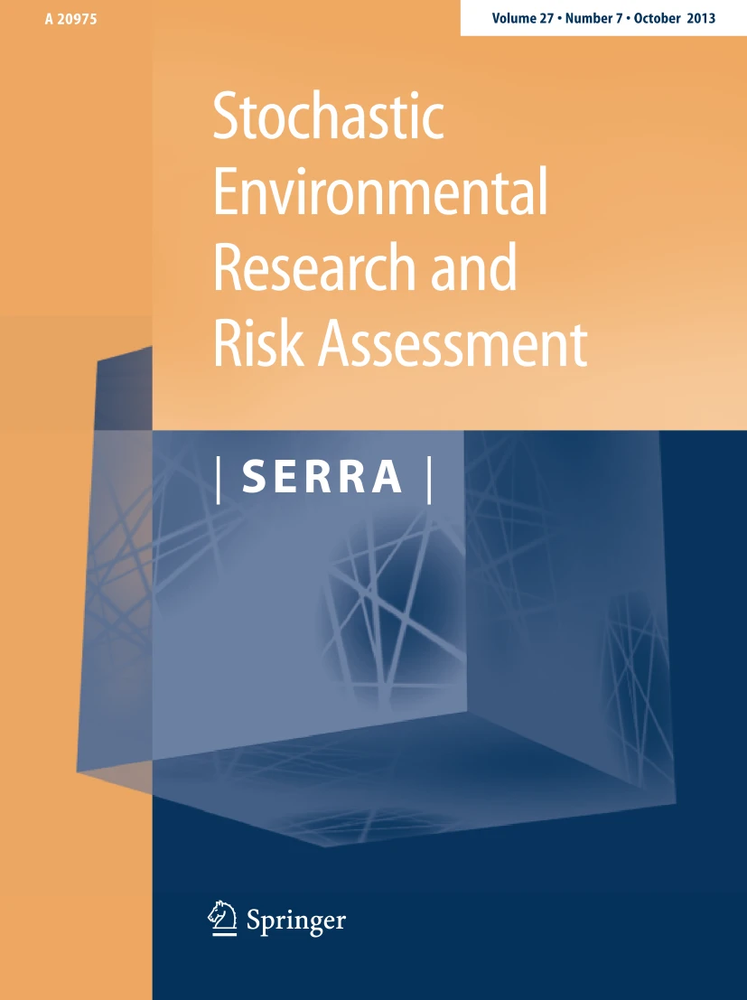

Upper-tail correction of multivariate synthetic environmental series using annual maxima
Keywords: Extreme value theory (EVT), Generalized extreme values (GEV), Annual maxima, Upper-tail correction, Quantile anchoring, Rank-preserving interpolation, Synthetic environmental risk simulations.